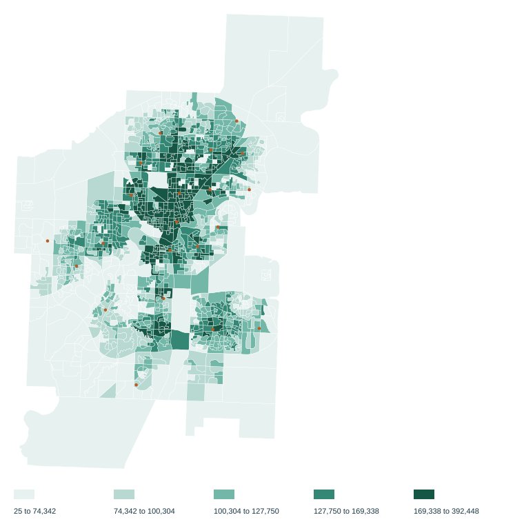
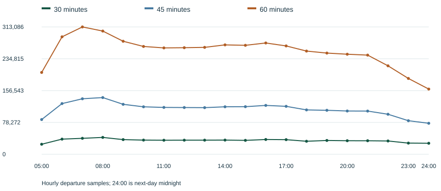
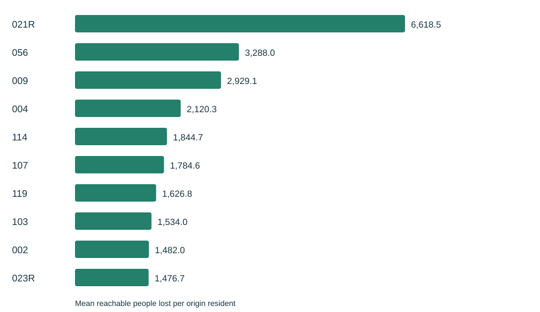

Independent calculation
A compiled round-based engine is compared with a separately written connection scan on random queries. Fixtures also use a journey enumerator.
Edmonton Network Lab / phase 2
A reproducible view of scheduled access across Edmonton. Every dissemination area. Every published route deletion. Results checked against an independent calculation.
Schedule for 2026-10-13 · Hourly departures, 05:00 to 24:00 · Walking graph proxy
2000/2000 independent routing queries matched; 634 reachable, 0 disagreements (95% upper bound 0.47% on reachable queries).
243/243 deletion results matched full reruns byte for byte.
6.47x aggregate measured deletion speedup with exact reuse; 4.96x over 186 routes with any effect. Highest-loss five: 021R: 1.12x; 056: 1.51x; 009: 1.20x; 004: 1.23x; 114: 1.76x.
01 / The accessibility atlas
Reachable population counts residents of destination areas whose representative points can be reached within the time budget. It measures scheduled opportunities, with no demand or ridership data.


Sensitivity excludes the 12 moved-point origins (5,553 residents), leaving 1,340 origins (1,005,346 residents). Both calculations retain every destination and its population; each averages twenty departures and weights included origins by Census population.
| Budget | All origins: people / libraries | Without moved origins: people / libraries |
|---|---|---|
| 30 minutes | 33,913.6 / 1.27 | 34,081.0 / 1.27 |
| 45 minutes | 111,442.3 / 3.81 | 111,985.6 / 3.83 |
| 60 minutes | 253,441.2 / 7.95 | 254,635.5 / 7.99 |
02 / Every route, one deletion at a time
Each scenario removes one route while keeping walking and remaining schedules fixed. Origins are weighted by Census population, and losses averaged over the same hourly departures.

| Rank | Route | Published route name | 45-minute loss | Hourly rank range | Departures in top ten |
|---|---|---|---|---|---|
| 1 | 021R | Capital Line | 6,618.5 | 1 to 6 | 20/20 |
| 2 | 056 | Meadows - Leger - West Edmonton Mall | 3,288.0 | 1 to 8 | 20/20 |
| 3 | 009 | Southgate - Eaux Claires | 2,929.1 | 1 to 8 | 20/20 |
| 4 | 004 | Lewis Farms - University - Capilano | 2,120.3 | 2 to 13 | 19/20 |
| 5 | 114 | West Clareview - Coliseum | 1,844.7 | 3 to 28 | 14/20 |
| 6 | 107 | Belvedere - West Clareview | 1,784.6 | 3 to 22 | 16/20 |
| 7 | 119 | Eaux Claires - West Clareview | 1,626.8 | 3 to 18 | 9/20 |
| 8 | 103 | Eaux Claires - Castle Downs - Kingsway | 1,534.0 | 4 to 22 | 10/20 |
| 9 | 002 | West Edmonton Mall - Stadium - Clareview | 1,482.0 | 4 to 43 | 11/20 |
| 10 | 023R | Valley Line | 1,476.7 | 5 to 20 | 11/20 |
Hourly ranks use route identifiers to break ties; top-ten counts are out of twenty departures. Budget reference correlation (30 versus 45): 0.944 over 182 routes with non-zero population loss at 30 or 45 minutes.
03 / A checkable calculation
A compiled round-based engine is compared with a separately written connection scan on random queries. Fixtures also use a journey enumerator.
Deleting service shrinks feasible journeys. A selected optimum that survives certifies the same arrival. Affected batches are rerouted and checked against full calculations.
Walking plus zero-wait geometry plus the signed timetable component equals scheduled access. Headway and span are combined because the extension rule creates artificial all-day service for short patterns.
04 / Boundaries of the result
The 12 moved access points are 592 m to 4,329 m from their interior points, adding 446 s to 3,256 s (about 7 to 54 minutes) of walking. 12 areas (5,553 residents) moved their access point. The frozen 7 exceptions (2,780 residents) remain in every denominator with access computed as is. The build requires this exact failure set and rejects any different set. Frozen list (JSON); Original points, access points and connector times (JSON).
| Area ID | Population | Reason |
|---|---|---|
| 2021S051248112451 | 336 | only own populated area reachable by walking in 60 minutes |
| 2021S051248112459 | 319 | only own populated area reachable by walking in 60 minutes |
| 2021S051248112460 | 259 | only own populated area reachable by walking in 60 minutes |
| 2021S051248112470 | 122 | only own populated area reachable by walking in 60 minutes |
| 2021S051248112493 | 25 | only own populated area reachable by walking in 60 minutes |
| 2021S051248112568 | 1,521 | only own populated area reachable by walking in 60 minutes |
| 2021S051248112577 | 198 | only own populated area reachable by walking in 60 minutes |
This public research release (2026-10-13) has no City endorsement.